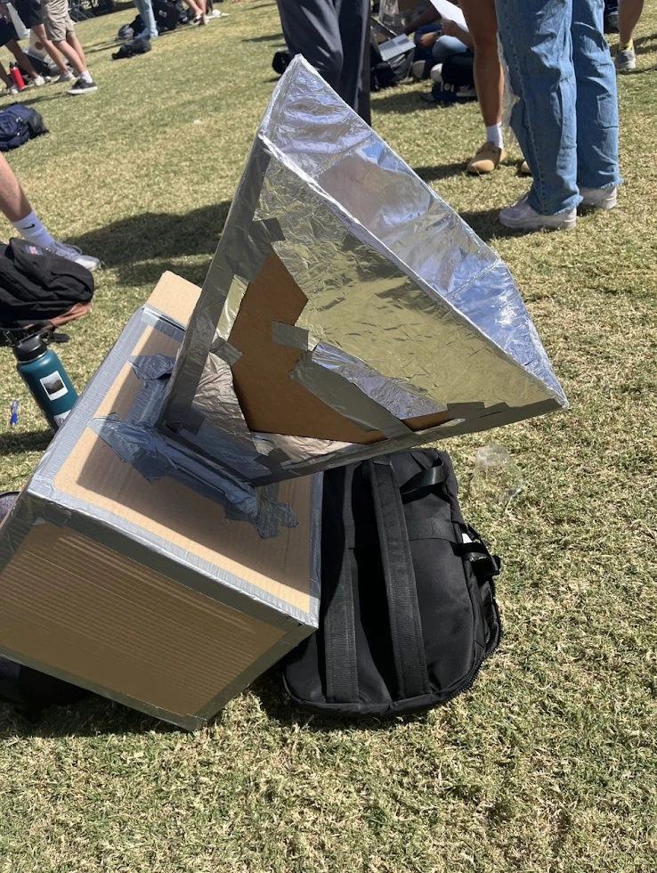
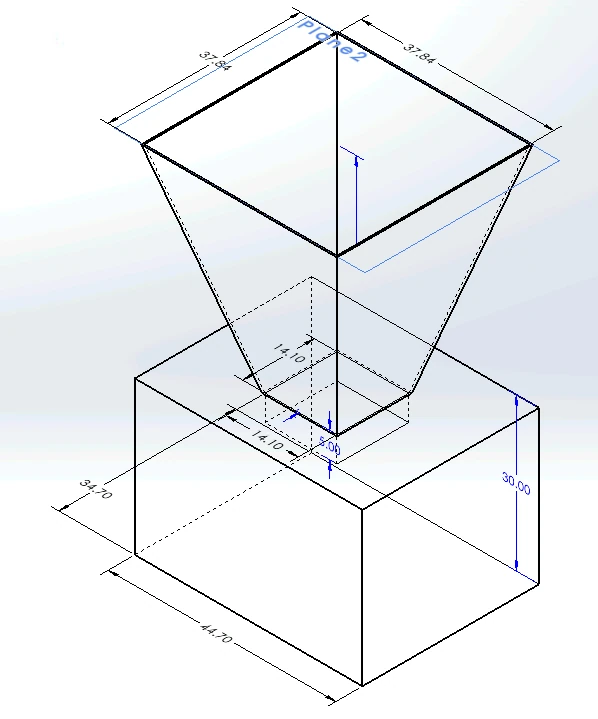
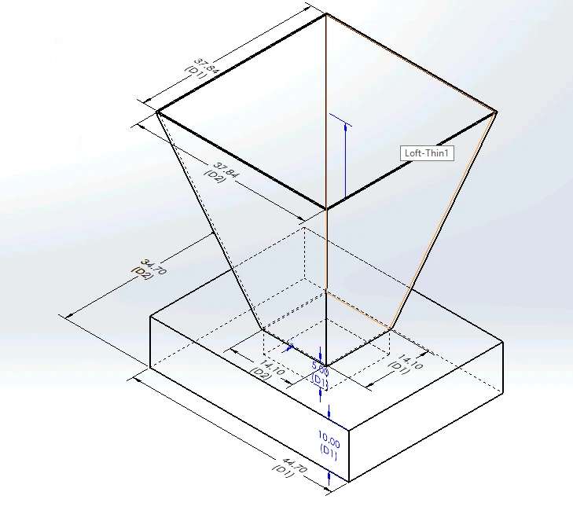
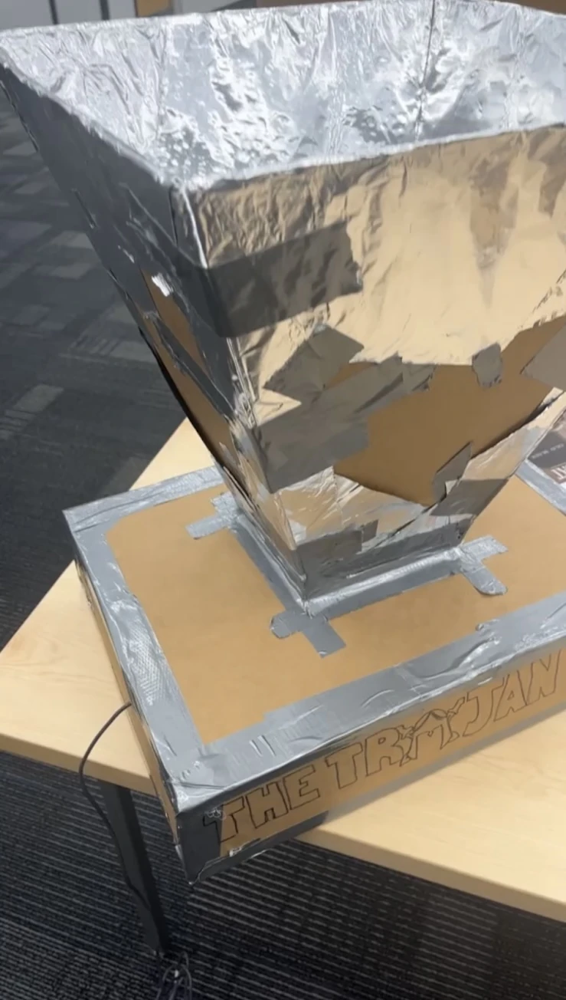
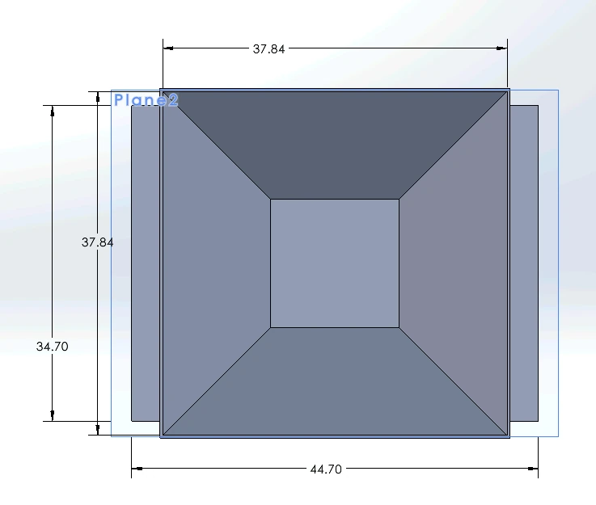
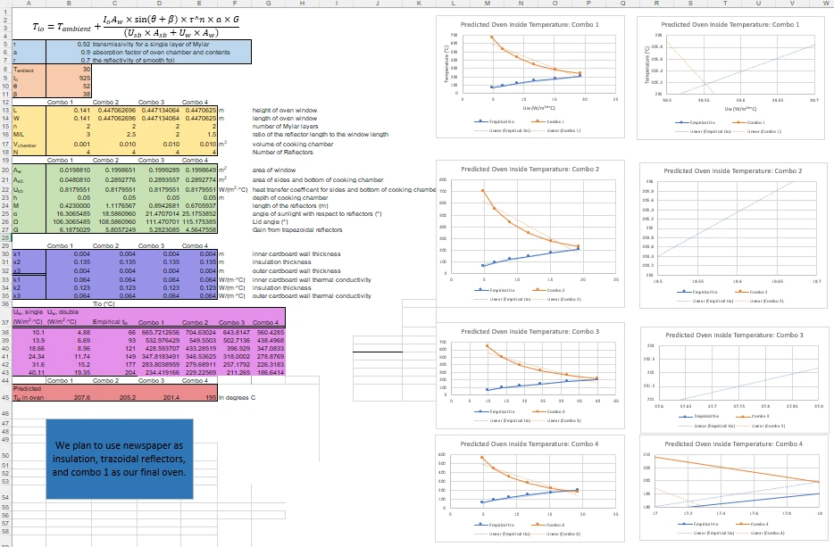

Solar Oven Thermal Design.
Leading a six-person team through heat-transfer analysis, prototyping, and testing of a low-cost solar oven.
Goal
Design and build a low-cost solar oven capable of cooking food, then compare experimental heating with a thermal prediction.
How I approached it
Lead a six-person team through heat-transfer calculations, CAD design, two cardboard/foil prototypes, and outdoor temperature testing.
Result / status
Reached 165°C (approximately 80% of a 205°C prediction); reported roughly 90% material-cost reduction against alternatives considered.


Original project documentation: CAD models and physical build photographs. Select an image to inspect it at full size.
Explore the full project gallery ↓Turn sunlight into measured heat.
Our six-person team was tasked with building an inexpensive solar oven that could bake a biscuit. We also needed to estimate its performance from heat-transfer calculations and compare the prediction with a real build.
Maximize heat while minimizing cost.
Solar input varied with weather and orientation, while heat could be lost through conduction, convection, and imperfect insulation. The oven also had to be inexpensive and practical to fabricate from readily available materials.
Model, build, revise, measure.
- 01
Led the six-person team and calculated predicted oven temperature using geometry, sunlight assumptions, and material/thermal properties.
- 02
Used CAD and Excel to compare designs, reflector arrangements, and heat-loss assumptions.
- 03
Built an initial cardboard-and-foil prototype, then revised the reflector and cooking-chamber geometry for a second version.
- 04
Tested the oven outdoors and compared its measured internal temperature with the theoretical result.
165°C measured; 205°C predicted.
The final prototype reached 165°C and successfully baked a biscuit. That was about 80% of the approximately 205°C modeled temperature. The team reported roughly 90% lower material costs compared with the alternatives evaluated for the project. Variable sunlight and real heat losses help explain the difference between model and experiment.
A useful model needs validation.
The spreadsheet established a target, but the physical build revealed how reflection, construction details, and weather affect real performance. Comparing the two mattered more than simply matching a perfect theoretical number.
Two iterations. One thermal model.
Photos and modeling screenshots show the path from initial concept through the second build, including the spreadsheet used to compare geometry and predicted oven performance.



